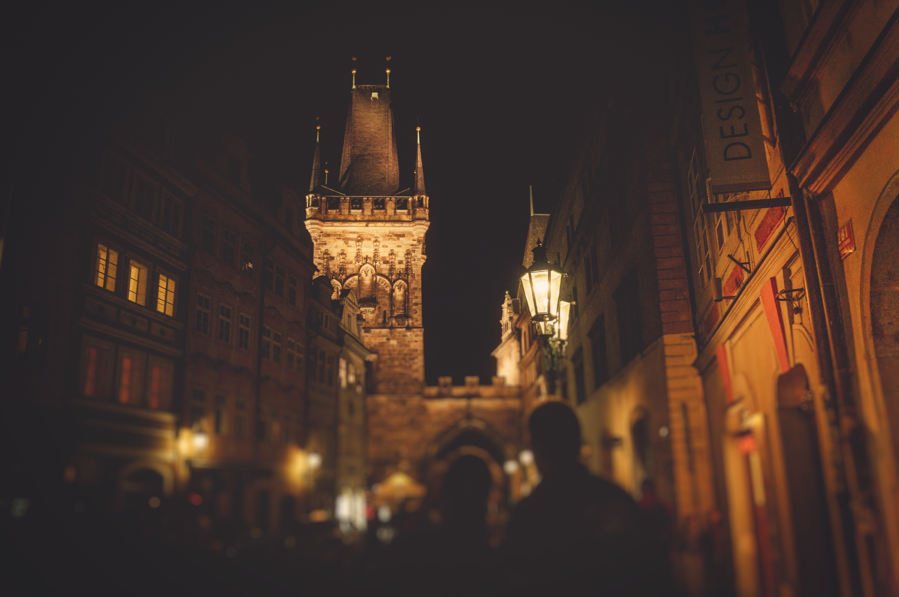
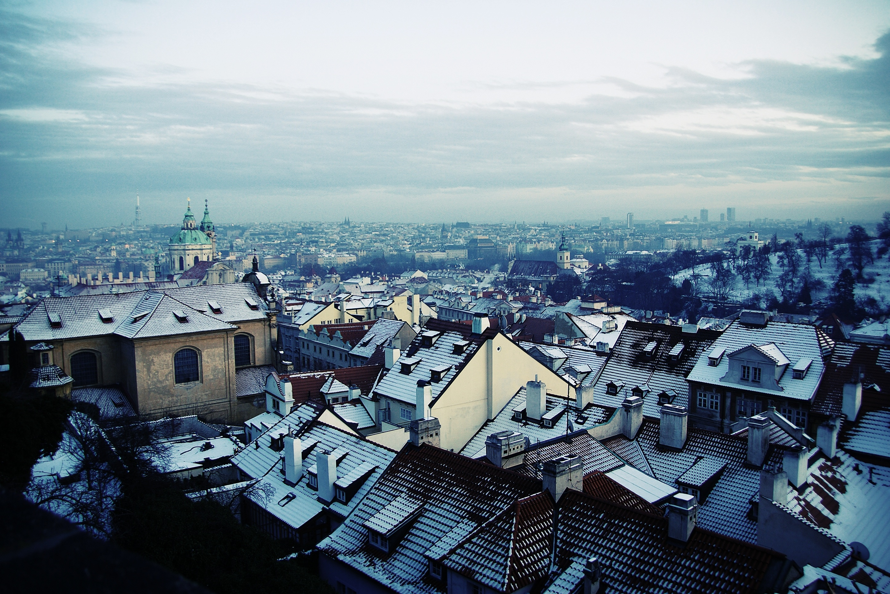
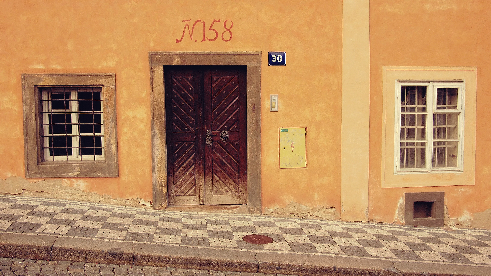
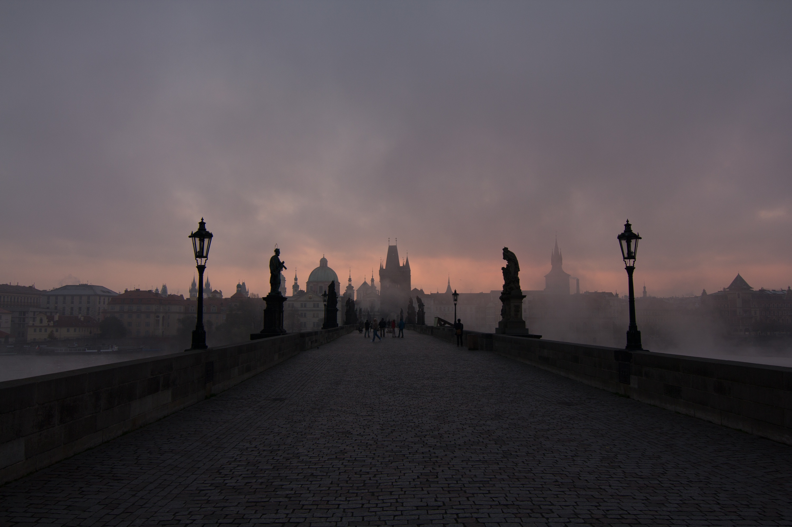
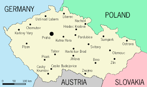

Prague is the capital and largest city of the Czech Republic. It is the 14th largest city in the European Union. It is also the historical capital of Bohemia. Situated in the north-west of the country on the Vltava river, the city is home to about 1.26 million people, while its larger urban zone is estimated to have a population of nearly 2 million. The city has a temperate climate, with warm summers and chilly winters.
Prague has been a political, cultural, and economic centre of central Europe with waxing and waning fortunes during its history. Founded during the Romanesque and flourishing by the Gothic, Renaissance and Baroque eras, Prague was the capital of the kingdom of Bohemia and the main residence of several Holy Roman Emperors, most notably of Charles IV (r. 1346–1378). It was an important city to the Habsburg Monarchy and its Austro-Hungarian Empire. The city played major roles in the Bohemian and Protestant Reformation, the Thirty Years' War, and in 20th-century history as the capital of Czechoslovakia, during both World Wars and the post-war Communist era.
Prague is home to a number of famous cultural attractions, many of which survived the violence and destruction of 20th-century Europe. Main attractions include the Prague Castle, the Charles Bridge, Old Town Square with the Prague astronomical clock, the Jewish Quarter, Petřín hill and Vyšehrad. Since 1992, the extensive historic centre of Prague has been included in the UNESCO list of World Heritage Sites.
The city boasts more than ten major museums, along with numerous theatres, galleries, cinemas, and other historical exhibits. An extensive modern public transportation system connects the city. Also, it is home to a wide range of public and private schools, including Charles University in Prague, the oldest university in Central Europe.
Prague is classified as an "Alpha-" global city according to GaWC studies. Prague ranked sixth in the Tripadvisor world list of best destinations in 2016. Its rich history makes it a popular tourist destination, and the city receives more than 6.4 million international visitors annually, as of 2014. Prague is the fifth most visited European city after London, Paris, Istanbul and Rome.
During the thousand years of its existence, the city grew from a settlement stretching from Prague Castle in the north to the fort of Vyšehrad in the south, becoming the capital of a modern European state, the Czech Republic, a member state of the European Union.
The Czech name Praha is derived from an old Slavic word, práh, which means "ford" or "rapid", referring to the city's origin at a crossing point of the Vltava river. The same etymology is associated with the Praga district of Warsaw.
Another view to the origin of name is also related to the Czech word práh (in the mean of a threshold) and a legendary etymology connects the name of the city with princess Libuše, prophetess and a wife of mythical founder of the Přemyslid dynasty. She is said to have ordered the city "to be built where a man hews a threshold of his house". The Czech práh might thus be understood to refer to rapids or fords in the river, the edge of which could have acted as a means of fording the river – thus providing a "threshold" to the castle.
Another derivation of the name Praha is suggested from na prazě, the original term for the shale hillside rock upon which the original castle was built. At that time, the castle was surrounded by forests, covering the nine hills of the future city – the Old Town on the opposite side of the river, as well as the Lesser Town beneath the existing castle, appeared only later.
Prague is situated on the Vltava river, at 50°05"N and 14°27"E. in the centre of the Bohemian Basin. Prague is approximately at the same latitude as Frankfurt, Germany; Paris, France; and Vancouver, Canada.
According to the 2011 census, about 14% of the city inhabitants were foreigners, the highest proportion in the country